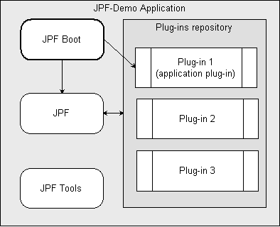
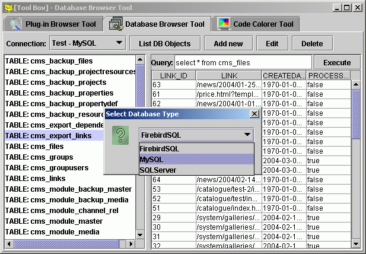

JPF Usage Tutorial (Demo application explained)
Introduction
This tutorial is a detailed description of JPF Demo Application (JPF-Demo, available for download). It is aimed for developers to get them quick start with JPF. Please note: this is not a Java Swing application developers tutorial; this tutorial also demonstrates the only one approach in JPF usage and not cover all possible usage scenarios.
It is recommended to download JPF-Demo source code also and install it as project into your favorite Java IDE. Look at detailed instructions on how to configure JPF based project in various Java IDE.
JPF-Demo is a GUI application that is designed with "Toolbox" metaphor in mind. The main application window is kind of container for "tools" - a small (ore huge :) utility applications of any kind that are developed as JPF plug-ins (or set of plug-ins).

On the screen shot you can see a "Code Colorer Tool" - an utility which gets java source text on it's input and transforms it to HTML text with syntax highlighting. This particular function is implemented using open-source Java2Html library (GPL, Java2Html Homepage).
Application structure
File system structure of the application looks like this:
[APPLICATION_HOME_FOLDER]/ +- data/ +- lib/ | +- commons-logging.jar | +- jpf.jar | +- jpf-boot.jar | +- jpf-tools.jar | +- jxp.jar | +- log4j.jar +- logs/ +- plugins/ +- boot.properties +- log4j.properties +- run.bat +- run.sh
Here are the explanation:
- data
- Folder, where plug-ins can store their configurations and other data files.
- lib
- Libraries that are required for application start, here are JPF libraries and libraries for logging support (they are used also by JPF itself).
- logs
- Log files come here
- plugins
- This is repository folder for JPF plug-ins.
- boot.properties
- Application start up configuration file.
- run.*
- Application start up scripts.
Component structure of the application can be represented by the following diagram.

Application boot
To perfrm application start, the run script makes call of entry point of JPF Boot library - org.java.plugin.boot.Boot.main(String[]) method. This method reads configuration from boot.properties file, initializes JPF runtime and loads all our plug-ins from plugins folder. Finally it calls our org.jpf.demo.toolbox.core plug-in because we specify that in configuration.
From this point the application control logic moves entirely into plug-in org.jpf.demo.toolbox.core, which we can name as, like in Eclipse, "application plug-in". The plug-in class for plug-in org.jpf.demo.toolbox.core extends special abstract class org.java.plugin.boot.ApplicationPlugin from the JPF Boot library. Thus we allow JPF boot code to call our specific boot logic.
Core plug-in
As almost any JPF plug-in, org.jpf.demo.toolbox.core consists of two parts: the manifest file and the plug-in specific Java code. We'll look through them separately.
Plug-in manifest
Plug-in manifest is an XML syntax file created according to plug-in DTD. The root tag of XML is:
<plugin id="org.jpf.demo.toolbox.core" version="0.0.4" class="org.jpf.demo.toolbox.core.CorePlugin">
Here we state that the plug-in ID is "org.jpf.demo.toolbox.core" and the version identifier is "0.0.2". We also declare that our plug-in have a "plug-in class" org.jpf.demo.toolbox.core.CorePlugin so that JPF runtime can initialize our plug-in properly. The "plug-in class" is an optional element of plug-in declaration and can be omitted if your plug-in doesn't need any code to be executed during plug-in activation. But this is not our case because this particular plug-in is an application entry point and have to show application GUI when it is activated.
The next manifest element is libraries declaration:
<runtime> <library id="core" path="classes/" type="code"> <export prefix="*"/> </library> <library type="resources" path="icons/" id="icons"> <export prefix="*"/> </library> </runtime>
Here we define that all Java code from this plug-in is placed into "classes/" folder within plug-in context (home) folder. We also declare that all classes and packages (*) from this plug-in are visible to other plug-ins so that they can use our code freely. We also declare a resources folder "icons/" and also made it visible to other plug-ins.
The last part of manifest is most interesting and this is most powerful feature of JPF (as for Eclipse) that makes our application extremely extendible. This is extension point declaration:
<extension-point id="Tool"> <parameter-def id="class"/> <parameter-def id="name"/> <parameter-def id="description" multiplicity="none-or-one"/> <parameter-def id="icon" multiplicity="none-or-one"/> </extension-point>
With this we declare that our plug-in expose a point where it can be extended by any other plug-in. We call this point as "Tool" and explain that extension to this point will be represented as a "tab" in application GUI. Any plug-in that contribute to this extension point should provide several parameters that will be used to present plug-in in application and communicate with it. We define four parameters for this extension point:
- class
- This is required parameter of type String that should contain full Java class name. The contract for that class will be described bellow.
- name
- The name of tool to be shown as "tab name" on GUI.
- description
- The tool description to be shown as "tab hint" on GUI. This is optional parameter.
- icon
- Path to resource with tool icon. This is optional parameter.
Now we are ready to implement logic for our core plug-in.
Plug-in code
As you remember, we've declared in plug-in manifest, that we'll provide plug-in class org.jpf.demo.toolbox.core.CorePlugin. So we did. Usually, we have to extend JPF's abstract class org.java.plugin.Plugin and implement two methods, the framework runtime will call during plug-in life cycle: protected void doStart() throws Exception; and protected void doStop() throws Exception;. But in our case, we have to extend org.java.plugin.boot.ApplicationPlugin class, because we are developing "application plug-in". Our implementation of those two methods from org.java.plugin.Plugin will be empty. The real purpose of this plug-in class is to provide "entry point" method from org.java.plugin.boot.ApplicationPlugin that is called from JPF Boot library and do all the magic.
The main duty of our plug-in class is to create and show application GUI. We also want to implement support logic for extension point, defined in manifest. The main trick here is to organize GUI logic efficiently. The main principle is to activate other plug-ins as late as possible and take maximal information from extension declarations. That's why we define so many parameters in extension point declaration. We are building GUI as "set of tabs with lazy initialization of components". Look at JPF-Demo source code for details. The most interesting place is communication with plug-in framework to get all extensions that are "connected" to our extension point:
ExtensionPoint toolExtPoint =
getManager().getRegistry().getExtensionPoint(
getDescriptor().getId(), "Tool");
for (Iterator it = toolExtPoint.getConnectedExtensions()
.iterator(); it.hasNext();) {
Extension ext = (Extension) it.next();
JPanel panel = new JPanel();
panel.putClientProperty("extension", ext);
Parameter descrParam = ext.getParameter("description");
Parameter iconParam = ext.getParameter("icon");
URL iconUrl = null;
if (iconParam != null) {
iconUrl = getManager().getPluginClassLoader(
ext.getDeclaringPluginDescriptor())
.getResource(iconParam.valueAsString());
}
tabbedPane.addTab(
ext.getParameter("name").valueAsString(),
(iconUrl != null) ? new ImageIcon(iconUrl) : null,
panel, (descrParam != null) ?
descrParam.valueAsString() : "");
}
The next interesting place here is the contract that we are defining for extension class. Here we state that "class" parameter, specified in extension declaration should refer to a Java class that implements interface org.jpf.demo.toolbox.core.Tool, defined in our plug-in. We also explain that objects of this class will be instantiated using default empty constructor. We also promise that method init will be called once during extension life cycle. Here the code that implements described concept:
// Activate plug-in that declares extension.
getManager().activatePlugin(
ext.getDeclaringPluginDescriptor().getId());
// Get plug-in class loader.
ClassLoader classLoader = getManager().getPluginClassLoader(
ext.getDeclaringPluginDescriptor());
// Load Tool class.
Class toolCls = classLoader.loadClass(
ext.getParameter("class").valueAsString());
// Create Tool instance.
tool = (Tool) toolCls.newInstance();
// Initialize class instance according to interface contract.
tool.init(toolComponent);
From this point we can distribute our application and wait when someone write plug-ins for it :) But we don't have time, let's do this job by ourselves and create several plug-ins that add tools to our box.
Code colorer plug-in
In this section I'll explain in details how to create a plug-in that add a tool to our box. As you already know, to achieve this, we have to implement an extension to extension point "Tool", defined in plug-in "org.jpf.demo.toolbox.core". As before we split explanation into two parts: plug-in manifest description and plug-in code comments.
Plug-in manifest
The root tag of manifest XML file should already be familiar to you:
<plugin id="org.jpf.demo.toolbox.codecolorer" version="0.0.5">
You see that plug-in ID is "org.jpf.demo.toolbox.codecolorer" and plug-in class is absent because we don't need any code to be executed during plug-in start/stop.
The next section of manifest is new for us:
<requires> <import plugin-id="org.jpf.demo.toolbox.core"/> </requires>
Here we define that our plug-in depends on plug-in "org.jpf.demo.toolbox.core" and may use it's exported code and resources and may also contribute to extension points defined there.
The libraries declarations are more expensive here as we are planning to use third party library among our own code.
<runtime> <library id="codecolorer" path="classes/" type="code"/> <library id="java2html" path="lib/java2html.jar" type="code"> <doc caption="Java2html Library by Markus Gebhard"> <doc-ref path="docs/java2html" caption="java2html library"/> </doc> </library> <library type="resources" path="icons/" id="icons"/> </runtime>
You see that we defined code library "java2html" that points to a JAR file "lib/java2html.jar" and also provide reference to documentation for this library (this is just for example, but would be good rule to provide documentation for every plug-in manifest element). Note also that we are not exported any code or resources as we suppose to use them within this plug-in only.
The last manifest element defines an extension. This is the main purpose of this plug-in.
<extension plugin-id="org.jpf.demo.toolbox.core" point-id="Tool" id="codeColorerTool"> <parameter id="class" value="org.jpf.demo.toolbox.codecolorer.CCTool"/> <parameter id="name" value="Code Colorer Tool"/> <parameter id="description" value="Tool to colorize source code text"/> <parameter id="icon" value="codecolorer.png"/> </extension>
As you can see, we give the ID to our extension as "codeColorerTool" and specified extension class as "org.jpf.demo.toolbox.codecolorer.CCTool". Bellow you'll see that this class fully conforms to contract, defined for "Tool" extension point. Now the JPF can automatically perform integrity check for our two plug-ins and warn if we miss something in declarations.
Plug-in code
Code part of "org.jpf.demo.toolbox.codecolorer" plug-in consists of two classes. The class org.jpf.demo.toolbox.codecolorer.CCTool implements interface org.jpf.demo.toolbox.core.Tool and thus conforms to a contract for "Tool" extension point. The method init from this interface in our case simply creates tool GUI and adds it to given Swing container as it's child. Class org.jpf.demo.toolbox.codecolorer.CodeColorer is the internal plug-in class that do all the job. The code for that class is taken from Java2Html's class de.java2html.Java2HtmlApplication with small non-significant modifications. I'll not comment this code here. Refer to JPF-Demo source code and Java2Html Homepage for details.
Notice as easy it was to add a tool as plug-in to our Toolbox! The most part of plug-in is a tool logic itself and not "plug-in support" logic. The JPF and core plug-in do the job for us!
Other plug-ins
There are two other plug-ins bundled with JPF-Demo application. First is Plug-in Browser Tool.

This plug-in allows you to load any number of plug-ins and investigate their structure and dependencies. Note that plug-ins are loaded with separate instance of plug-in registry and not activated by demo application, they are even not visible for it. The main purpose of this plug-in is to demonstrate how to "instrument plug-ins with JPF" and provide rudimentary tool to look at plug-ins structure.
Another plug-in is Database Browser Tool.

The purpose of this plug-in is not to demonstrate how to work with JDBC in Java but how it is possible to provide more extensibility to you Java application. Actually "DB Browser" is not just a plug-in but a set of plug-ins. First, "org.jpf.demo.toolbox.dbbrowser", implements "Tool" providing extension for "Tool" extension point and maintains DB browser GUI. Next, this plug-in defines it's own extension point "Database" giving possibility for other plug-ins to plug into this "DB Browser". Actually, the "org.jpf.demo.toolbox.dbbrowser" plug-in don't know anything about any particular database. All DB specifics are abstracted as extension point (and several interfaces) and actually implemented in other plug-ins. Look at plug-in source code for details.
What's next?
Hope this article gives you a basic understanding of main principles that forms JPF and applications using it. Now you can try to apply those to your tasks or form your own approach in development with JPF.
Feel free to ask your questions in public JPF forum. You are also welcome to share your ideas and use cases with others. This will definitely help to improve JPF and make it popular framework for building extremely flexible applications.